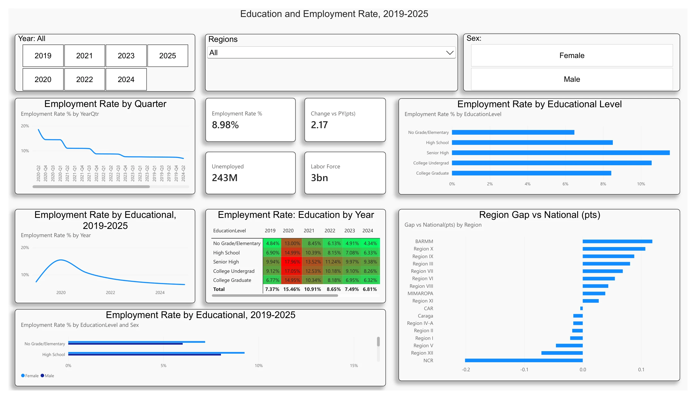

Education & Employment Rate Analytics
I engineered an executive Power BI dashboard analyzing multi-year national labor force dynamics, employment rates across educational attainment levels (No Grade/Elementary, High School, Senior High, College Undergrad, College Graduate), quarterly progression, and regional disparity benchmarks.
PDF PREVIEW
ITST112-BA
